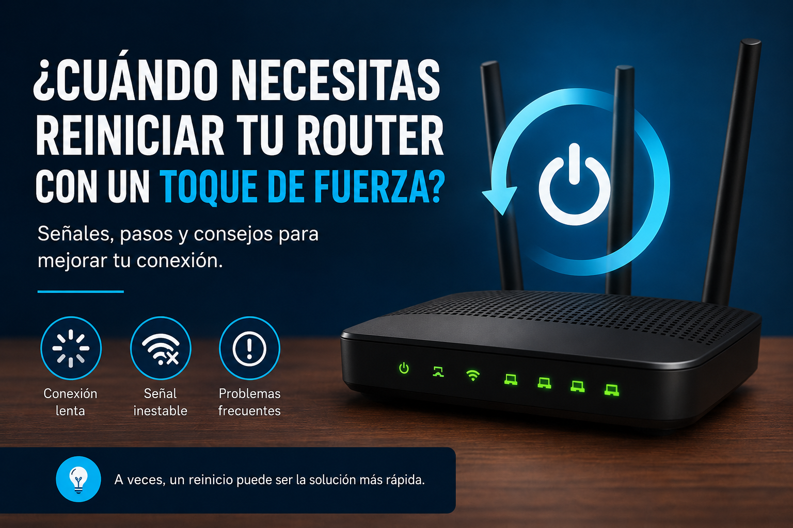

Reiniciar no es lo mismo que restablecer de fábrica
Uno de los errores más comunes al intentar recuperar una conexión es tratar cualquier problema como si necesitara un factory reset. No es asÃ. Un reinicio normal vuelve a arrancar el equipo y conserva su configuración. Un restablecimiento de fábrica, en cambio, devuelve el equipo a valores predeterminados y puede borrar la configuración personalizada. En un router que funciona como gateway, servidor DHCP, punto de acceso o equipo central, pulsar el botón de reset sin una copia puede convertir una falla sencilla en una interrupción mayor.
En esta guÃa usamos reinicio para referirnos a apagar y encender de forma controlada. El restablecimiento de fábrica solo debe considerarse cuando existe una razón concreta y sabes cómo reconstruir la configuración.
Antes de tocar el botón: identifica el alcance
Primero comprueba si el problema afecta a un solo dispositivo o a toda la red. Si solo falla un teléfono, una laptop o una consola, el router no necesariamente es el culpable. Prueba un segundo equipo y, si puedes, conecta un computador por Ethernet. Una falla exclusiva de Wi-Fi apunta a una ruta distinta de una caÃda completa de Internet.
- Comprueba si los indicadores del equipo muestran el comportamiento habitual.
- Prueba un segundo dispositivo para separar una falla del cliente de una falla de red.
- Si es posible, prueba por Ethernet para descartar interferencia inalámbrica.
- Anota cuándo empezó el problema y si coincidió con un corte eléctrico, cambio de configuración o actualización.
- Si tienes un segundo equipo de red, comprueba si el fallo también aparece allÃ.
Cuándo un reinicio normal sà tiene sentido
Un reinicio puede ser razonable cuando el equipo lleva mucho tiempo funcionando, algún servicio interno dejó de responder, la conexión quedó en un estado extraño después de una interrupción eléctrica o existe un comportamiento temporal que desaparece al volver a iniciar los servicios. No es una reparación permanente: si la causa real es una mala configuración, un enlace degradado, saturación, firmware defectuoso o un problema del proveedor, el sÃntoma puede regresar.
Hazlo de forma controlada: guarda cualquier cambio reciente, apaga el equipo según las instrucciones del fabricante, espera unos segundos y vuelve a energizarlo. Después espera a que termine el arranque antes de sacar conclusiones. Reiniciar repetidamente cada pocos minutos no aporta información y dificulta el diagnóstico.
Cuándo no debes hacer un restablecimiento de fábrica
No uses el botón de reset como primer recurso si no tienes la contraseña de administración, los datos de la conexión, el esquema de direccionamiento, las VLAN, las reglas de firewall o una copia de la configuración. En routers de operador también puedes perder parámetros que el proveedor necesita para levantar el servicio.
Si el equipo pertenece a una red de trabajo, negocio o instalación con varios puntos de acceso, cámaras, teléfonos IP o switches administrables, el riesgo es mayor. Documenta primero la configuración y sigue el procedimiento del responsable de la red.
Si el problema continúa después del reinicio
Si el mismo sÃntoma vuelve inmediatamente, el reinicio no era la causa de la solución. Continúa por capas. Comprueba primero el enlace fÃsico o la señal inalámbrica, después la dirección IP del cliente, el gateway, la resolución DNS y finalmente el acceso a Internet. Si todos los clientes fallan y el gateway local responde, el siguiente punto de comprobación puede ser la salida WAN o el proveedor.
- Solo un cliente falla: revisa ese equipo, su Wi-Fi, DHCP y configuración de red.
- Varios clientes fallan pero el router responde: revisa DHCP, DNS, Wi-Fi o servicios internos.
- La LAN funciona pero no hay Internet: revisa WAN, gateway, ruta por defecto y estado del enlace con el proveedor.
- El equipo pierde configuración o se reinicia solo: investiga alimentación, firmware, temperatura y hardware antes de borrar la configuración.
La regla práctica de NúcleoTech
Un reinicio debe ser una prueba con una hipótesis, no un ritual. Si sospechas que un servicio quedó bloqueado, reiniciar sirve para comprobar si el sÃntoma desaparece temporalmente. Si sospechas un problema de configuración, el reinicio no lo corrige. Y si sospechas un problema fÃsico o del proveedor, tampoco tiene sentido borrar una configuración que quizá estaba funcionando.
La diferencia entre reiniciar y restablecer de fábrica parece pequeña, pero en una red puede ser enorme. Antes de usar el botón de reset, asegúrate de tener una copia y de poder reconstruir el equipo. Para problemas persistentes, documenta el sÃntoma, las pruebas realizadas y el resultado de cada una; esa información vale mucho más que repetir el mismo reinicio.